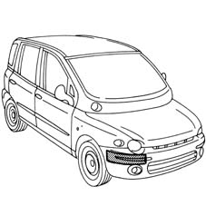
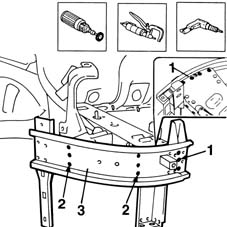
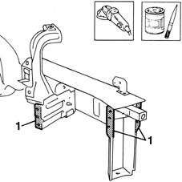
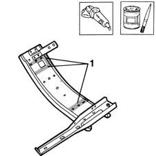
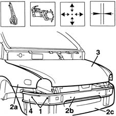
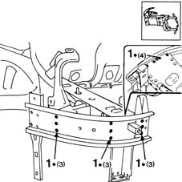
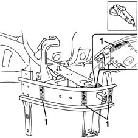
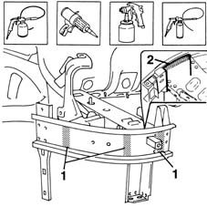

7210A25 R.R. FRONT ANGULAR CROSSMEMBER
- Path
- Procedures > 72 PANELS AND FRAME > 7210 REMOVING REFITTING > 7210A STRUCTURAL ELEMENTS (FRONT PART) > 7210A25 R.R. FRONT ANGULAR CROSSMEMBER
- Kind
- repair procedure (removal / refitting; the operation number is the code)
- Applies to
- all engines; all production periods
- Interactive page
- https://sloeber94.github.io/elrnDB-fMltpl/en/#/2892303
Applies to: all engines; all production periods
 Removing
Removing
 Refitting
Refitting7210A16 R.R. WING LOWER CROSSMEMBER
Check if any of the connected parts are deformed by checking body alignment dimensions. Use appropriate measurement tools (reference rigs, templates or gauges).
Straighten the body if necessary.

Applies to: all engines; all production periods
Use a rotary brush to remove the paint and expose the spot welds.
1. Use a chamfering machine to remove the weld spots shown in the figure.
2. Drill out the spot welds shown in the figure.
3. Remove the angle bar from the car.

Applies to: all engines; all production periods
Refitting
RemovingUse a profile stake and hammer to correct any deformations in the bodywork.
Use a grinding wheel and remove the weld residues from the bodywork.
1. Apply electroweldable paint in the areas indicated.

Applies to: all engines; all production periods
Use a grinding wheel and remove the rust-proofing from the part.
1. Apply the electroweldable paint finish to the areas shown in the figure.

Applies to: all engines; all production periods
Position the part correctly on the car and secure using self-locking grippers.
1. Make a few spot welds.
Remove the self-locking grippers.
2. Refit the front wing (2a), side piece front cross member (2b) and bumper (2c).
3. Lower the bonnet and check that the surrounding gaps are even.
Remove the parts fitted previously.

Applies to: all engines; all production periods
1. Use a spot welder to weld the areas shown in the figure.

Applies to: all engines; all production periods
1. Use a grinding wheel to clean the newly-welded areas.

Applies to: all engines; all production periods
1. Apply rust-proofing to newly welded areas.
2. Seal the joint lines between the part and the car using sealant.
Apply the paint (in accordance with the specified procedure).
Apply wax.

Applies to: all engines; all production periods
Refit fouling parts.